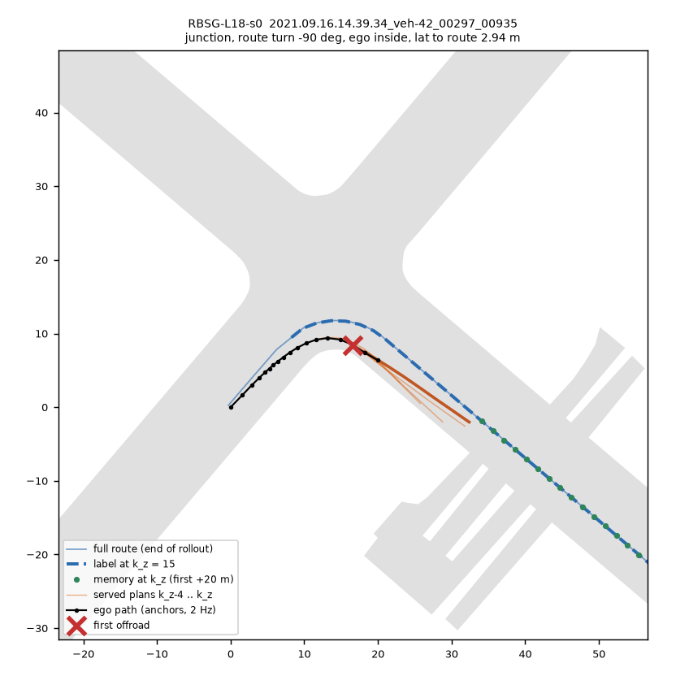
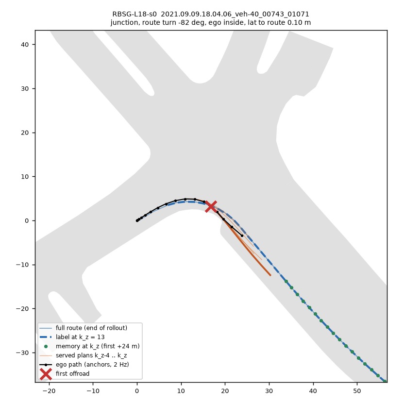
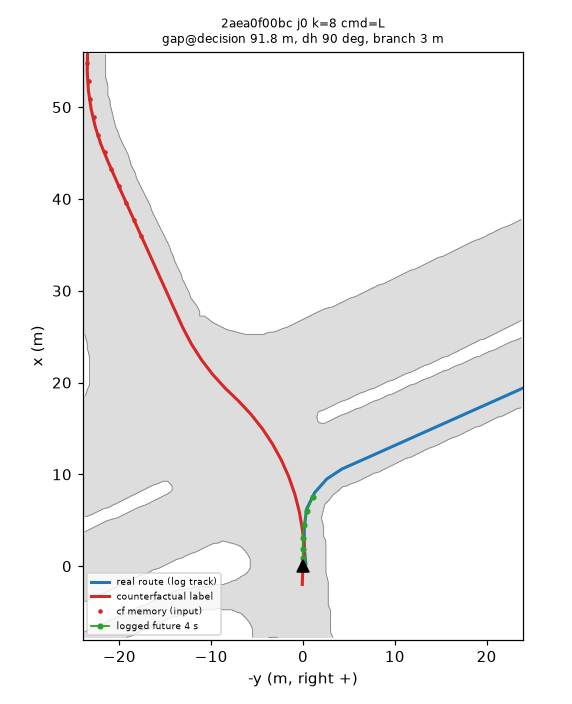
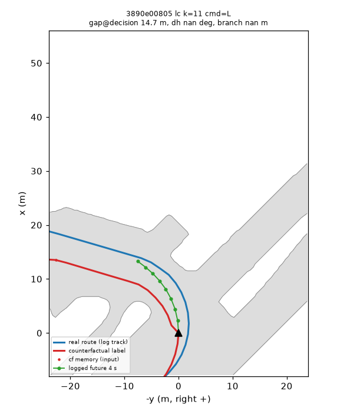

均分、零分、分类、GT 来自 held_raw.txt / a3/held_raw_a3.txt（460 个场景）；「零分 452」与 at-fault 是登记口径 ol_report（有 rollout 的 452 个场景）。
G-rely Δ = 路口开发集行把记忆置空后的 ADE 变化（米）。转弯完成率：held 里 24 个 ≥ 60° 的转弯场景，「全部 / 记忆未覆盖」（记忆覆盖 +20 米的只有 1 个场景，不读）。
右转内侧 = 落在右转内侧的出路零分。所有续训都从 RB0-F-s0 起，s0 / s1 是续训的 seed。— = 未算或不适用。
| checkpoint | 做了什么 | 均分 | 零分 | 碰撞 / 出路 / 走廊 | 零分 452 | at-fault 452 | GT（横向）米 | G-rely Δ | 转弯完成 % | 右转内侧 |
|---|---|---|---|---|---|---|---|---|---|---|
| RB0-F-s0 / s1 | 出厂权重 + YR10m10 配方 + 路线记忆支路 | 0.822 / 0.825 | 59 / 59 | 7/29/15 · 5/37/9 | 51 / 51 | 36 / 42 | 1.314 / 1.238 | +0.025 / +0.022 | 54.2 / 62.5 | 1 / 2 |
| RB-F-s0 / s1 | RB0 + 反事实行（路线 hinge 0.5 米） | 0.768 / 0.786 | 87 / 78 | 21/49/9 · 17/43/10 | — | — | 1.682 / 1.599 | −0.032 / −0.019 | 75.0 / 66.7 | 17 / — |
| RNONE-L18 | 全程续训 10 000 步，无行 | 0.781 / 0.786 | 80 / 75 | 16/39/17 · 17/40/10 | 72 / 67 | 55 / 57 | 1.526 / 1.452 | +0.026 / +0.023 | 62.5 / 62.5 | — |
| RBS-L18（登记主臂） | 全程续训 + S 两项 + 路线 hinge | 0.671 / 0.714 | 122 / 99 | 27/71/16 · 17/64/10 | 114 / 91 | 98 / 81 | 1.391 / 1.294 | +0.014 / +0.013 | 58.3 / 62.5 | 20 / 21 |
| RNONEG-L18-s0 | 温和续训 2 500 步、lr × 0.1，无行 | 0.816 | 60 | 6/31/15 | — | — | 1.293 | +0.026 | 41.7 | 1 |
| RBSG-L18 | 温和续训 + S 两项 + 路线 hinge | 0.801 / 0.796 | 65 / 66 | 9/40/8 · 7/43/8 | 57 / 58 | 49 / 50 | 1.190 / 1.196 | −0.005 / −0.003 | 54.2 / 58.3 | 19 / 21 |
| RSG-L18 | 温和续训 + 只 S 两项（无路线 hinge） | 0.866 / 0.868 | 34 / 34 | 4/17/5 · 6/13/7 | 26 / 26 | 21 / 19 | 1.135 / 1.144 | +0.025 / +0.028 | 66.7 / 58.3 | 1 / 1 |
| RBSGc-L18 | 温和续训 + S + 路线 hinge 只加在记忆覆盖 +20 米的行 | 0.845 / 0.842 | 46 / 50 | 5/27/6 · 5/30/7 | 38 / 42 | 32 / 35 | 1.151 / 1.225 | +0.008 / +0.012 | 79.2 / 70.8 | 5 / 10 |
| RBSG2-L18（第二轮） | 温和续训 + S + 路线 hinge，池里加回 RBSG 自己的 rollout | 0.870 / 0.873 | 37 / 37 | 4/22/3 · 5/20/4 | 29 / 29 | 26 / 25 | 1.215 / 1.185 | +0.004 / +0.008 | 70.8 / 75.0 | 4 / 4 |
| YS-L18（参照） | 旧家族，第 264 条 | 0.820 / 0.826 | 53 / 51 | 9/14/22 · 9/15/19 | 45 / 43 | 23 / 24 | 1.368 / 1.346 | — | 54.2 / 54.2 | — |
| YS2G-L18（参照） | 旧家族最好，第 264 条第 11 项 | 0.829 / 0.837 | 51 / 48 | 7/17/19 · 7/13/20 | 43 / 40 | 24 / 20 | 1.272 / 1.279 | — | 58.3 / 58.3 | — |
| YR10m10-F（参照） | 旧底座，提交 #2 | 0.771 / 0.781 | 82 / 79 | 10/33/31 · 4/37/30 | 74 / 71 | 43 / 41 | 1.495 / 1.404 | — | 37.5 / 37.5 | — |
读法：新底座 RB0-F 的零分结构和旧家族不同，走廊零分少（15 / 9 对 YS 的 22 / 19）、出路多（29 / 37 对 14 / 15）。RSG 在三类上都是最少的那一档。 路口段自车到路线的横距中位所有 checkpoint 都在 0.48–0.68 米；plan 2 秒短缺（plan 2 秒弧长减车速 × 2 秒）中位在 −0.18 到 −0.36 米，路口段为正（+0.21 到 +0.93）， 即第 285 条说的「plan 比车短」在 nuPlan held 上不明显。完整列见决策 286。
配对（452 个场景、39 个日志，seed 平均对 RB0-F-s0，95% 置信区间按日志聚类重抽 10 000 次）：均分 +0.045 [+0.022, +0.072]，零分 −25.0 [−36.9, −14.2]，at-fault −16.0 [−26.4, −6.7]， GT −0.174 [−0.252, −0.105] 米，fixed / broken 27 / 4（null 5）。L3 三项全过，closed-loop.md 的 CL-1 原文也满足。对全程续训的无行对照 RNONE：零分 −43.5 [−55.0, −32.4]。 两个 seed 几乎一样（26 / 26，at-fault 21 / 19）。
行没有把路线依赖冲掉：RSG 的 G-rely 是 +0.025 / +0.028，和底座一样，开发集 ADE 0.528 / 0.527 也和底座一样。对照第 264 条：同一个温和 schedule 的 S 行放在旧底座 YR10m10 上（YSG）零分 51.5， 放在新底座上是 26（同为 452 口径），差别来自底座。转弯完成率对 RB0-s0 +12.5 / +4.2 个百分点，置信区间含 0；逐决策的 L5 也不过。所以 RSG 少掉的零分不是「更会跟路线」读得出来的，主要是出路（−14）和走廊（−10）。
还不能叫它新底座的理由：它是看过 RNONE（全程 schedule 伤底座）和 RBSG（hinge 臂出路多）之后用补记 3 加的拆分臂；对 YS2G 的配对置信区间没算；公开 1491 场景的护栏、PAI 281 都没读；所有续训都从同一个 RB0-F-s0 起。
| checkpoint | 路线 hinge | 出路零分 | 路口 / 进路口 | 转弯处零分 | 右转内侧 | 左转内侧 |
|---|---|---|---|---|---|---|
| RB0-F-s0 / s1 | 无 | 29 / 37 | 5/4 · 13/8 | 19 / 28 | 1 / 2 | 7 / 10 |
| RNONEG-L18-s0 | 无 | 31 | 10/2 | 21 | 1 | 9 |
| RSG-L18 | 无（只 S） | 17 / 13 | 8/3 · 7/2 | 11 / 8 | 1 / 1 | 6 / 5 |
| RBSGc-L18 | 只在记忆覆盖 +20 米的行 | 27 / 30 | 9/6 · 11/6 | 20 / 23 | 5 / 10 | 9 / 6 |
| RBSG-L18 | on-policy 行，死区 1 米 | 40 / 43 | 20/9 · 18/10 | 31 / 36 | 19 / 21 | 8 / 7 |
| RB-F-s0 | 反事实行，死区 0.5 米 | 49 | 19/12 | 39 | 17 | 14 |
| RBSG2-L18（第二轮） | on-policy 行 + RBSG 自己转过头的状态 | 22 / 20 | 12 · 11（合计） | — | 4 / 4 | 7 / 2 |
| RBS-L18 | on-policy 行，全程续训 | 71 / 64 | 18/19 · 20/16 | 50 / 48 | 20 / 21 | 18 / 19 |
来源 experiments/route_follow/results/route-night/a3/offroad_a3.md（RSG / RBSGc 用同一脚本 rf_offroad.py 在本页之前补跑）。整个差就在「右转内侧」一列，两个 seed、两种行来源、两种步数都一样，
拆分臂把它钉在路线 hinge 上：拿掉 hinge 回到底座水平，只在记忆覆盖的行上加减半。
诊断（route-follow-offroad.md，测）排除了三个直观的解释：标签没有出路（零分点 ±30 米内的标签点全部在路上、放得下车；训练池 17 427 行里只有 7 行有一个放不下车的点）； 记忆没有漂移（记忆点对当场重建的路线偏差中位 4–6 厘米）；hinge 也没有压过道路项（「hinge 已满足但车放不下」的份额与底座相当）。剩下的是过转：转弯零分里自车航向比路线更往里的份额 54–71%，无 hinge 的是 11–18%。 推断（没做干预）：on-policy 行来自 RB0 自己的 rollout，RB0 右转偏外，hinge 在这些行上只会说「再早一点、再急一点」，池里几乎没有转过头的状态（RB0 的 plan 放不下车的行只有 1.3%）， 对称的 hinge 和道路项在另一侧拿不到样本；反事实行全是日志状态，同样没有。第二轮的 RBSG2 把 RBSG 自己转过头的状态加回池子，右转内侧回到 4 / 4（见第七节），与这个推断一致。


反事实池 on1_CF：14 765 行（路口 8 980 + 3 196、变道 2 589；12 042 个 token、825 个日志），开发集另存 309 行只作 G-swap。G-cf1 决策处反事实与真实路线横距中位 84.6 米（变道类 4.6 米），G-cf2 折线 99.9995% 在道路栅格内，G-cf3 六张图人眼放行。
| G-swap（开发集路口行） | 横移 / 所需（中位） | 4 秒终点落反事实一侧 | 只换记忆（命令真实） | 变道行横移 / 所需 |
|---|---|---|---|---|
| RB-F-s0 | 0.55 | 94% | 0.38 / 67% | 0.05 |
| RB-F-s1 | 0.56 | 95% | 0.25 / 39% | 0.07 |
| RB0-F-s0（参照） | 0.19 | 71% | 0.03 / 12% | 0.02 |
线：横移 ≥ 50%、终点侧 ≥ 70%、直路平移横移 ≤ 0.10 米（RB-F 0.003 米）：RB-F 两个 seed 都过。只换记忆时只有一半效果，路口换路线要靠记忆和命令一起；变道行只有 19 行，横移不到所需（中位 1.8 米）的十分之一。 代价：开发集 ADE 0.605 对 RB0 0.528（G-real 不过），记忆置空反而让 ADE 降（G-rely 不过），闭环零分 87 / 78，右转内侧 17。


| 线 | 判词 | 数 |
|---|---|---|
| L1 G-rely | RB0-F 过；RB-F 不过 | 路口 Δ +0.025 / +0.022，路口 − 直路下界 +0.013 / +0.007；RB-F −0.032 / −0.019 |
| L2 G-swap | RB-F 过（只路口） | 0.55 / 0.56，终点侧 94% / 95%，G-ST 0.003 米 |
| L0 G-real | RB-F 不过 | 开发集 ADE +0.077（线 +0.01） |
| L3 对 RB0 | RBS、RBSG、RBSGc 不过；RSG、RBSG2 过 | 零分 +51.5 / +6.5 / −11.0 [−25.0, +1.0] / −25.0 [−36.9, −14.2] / −22.0 [−35.4, −10.2] |
| L4 对无行对照 | RBS 不过；温和臂只有点估计 | RBS 对 RNONE +33.0 [+13.6, +49.4]；RSG 34 对 RNONEG 60（单 seed，未算配对） |
| L5 逐决策跟路线 | 没有臂过 | 覆盖半边 RBS-s0 −0.62 [−0.85, −0.31] 过、s1 不过；其余臂置信区间含 0；路口横距中位全部 < 1 米 |
池闸：on1_L18RB0 17 429 行，路线标签 ok 0.9999，记忆覆盖 +20 米 46%，重建首点与 driver 收到的一致 0.994（线 0.99）；R1 0.9987、interpreted control 过、R2 过，一个 rollout 与日志时间对不上整条不出行。
决策树：两个底座都按时训出，RB0 过 G-rely、RB 不过，所以链走 RB0；RBS 的 L3 不过之后，任务书写的是「不加臂」，实际上主会话在读数前用补记 2–5 先后加了温和臂、拆分臂和第二轮，RSG 出自补记 3。
时间：主链 01:15 → 03:25（任务书估 6–7.5 小时）；补记 3 的读数 04:07 出完。GPU job 时主链 14.7 小时（任务书估约 8 card-h；读数按 6 个 chunk 分卡并行，job 时大于卡时），补记 3 再 3.95 小时； pool 记录 01:15–04:15 之间 GPU 在算 10.0 card-h（6 卡 × 3 小时的 56%），30% 时间没有排队的活；没有平台 SIGKILL。
ol_report 用的对照是全程的 RNONE）；RB-F 与 RNONEG 的 452 配对行。RBSG-L18-s0 在训练的 1 020 个场景上滚 18 决策，出 17 380 行（路线标签 ok 0.9997，覆盖 +20 米 46%，首点一致 0.993，R1 / R2 过），和第一轮的池合成 34 809 行；从 RB0-F-s0 起，温和 schedule，S 两项 + 路线 hinge，即 RBSG2-L18。
| RBSG2-L18（s0 / s1） | 读数 | 线 | 判词 |
|---|---|---|---|
| L3 对 RB0（452 配对） | 零分 −22.0 [−35.4, −10.2]，at-fault −10.5 [−22.0, +0.0]，GT −0.114 [−0.237, −0.000]，均分 +0.051 [+0.024, +0.080]，fixed / broken 29 / 6 | 零分上界 < 0、at-fault 上界 ≤ +2、GT 不更大 | 过 |
| 机制线（460） | 右转内侧 4 / 4，出路 22 / 20，走廊 3 / 4（RBSG 19 / 21、40 / 43、8 / 8） | ≤ 6、≤ 34、≤ 11，两 seed | 过 |
| L5 覆盖半边 | s0 −0.389 [−0.711, +0.124]，s1 −0.561 [−0.814, −0.129] | 上界 < 0 | 只 s1 过 |
| L1 G-rely | 路口 Δ +0.004 / +0.008，路口 − 直路置信区间含 0 | ≥ 0.01 且下界 > 0 | 不过 |
和 RSG 比：零分持平（37 对 34，460 原始，两者之间未做配对置信区间），跟路线明显更好：走廊零分 3–4 对 5–7，横向 GT 0.74–0.76 对 0.87–0.88，转弯完成率对 RB0 +16.7 / +20.8 个百分点，右转完成 62.5% / 62.5%（RBSG 12.5% / 37.5%）。 所以两个候选分工：RSG-L18 是安全候选，RBSG2-L18 是跟路线候选。
G-rely 不过的一种解释（推断，没检验）：路线被学进了主干和 plan 本身，而不是只经过记忆支路，所以开环里把记忆置空不再伤 ADE。这也意味着 RBSG2 在闭环里靠什么跟路线还不清楚，闭环里置空记忆的读数可以直接回答。
B 的 gains pilot 过（rel_front_steering_angle_weight 20：交接打转 3 对 22，g2 + g3 零分 45 对 48），PAI rollout 用 20；pai_driver.py 已能 serve 带路线记忆的 checkpoint（19137cec）。
pai281/{ybase,ys0,ys1}）。来源：experiments/route_follow/results/route-night/（held_raw*.txt、report_*.md、follow_*.md、gswap/、rely/、pool_L18RB0_gates.md、a3/、r2/）、results/cf_gates.json、
research/route-follow-offroad.md、experiments/steer_long/results/gains_pilot/read.md；登记 experiments/route_follow/plans/2026-10-13-route-night-prereg.md；box $DATA_DIR/runs/route_mem/、$DATA_DIR/runs/route_follow/。